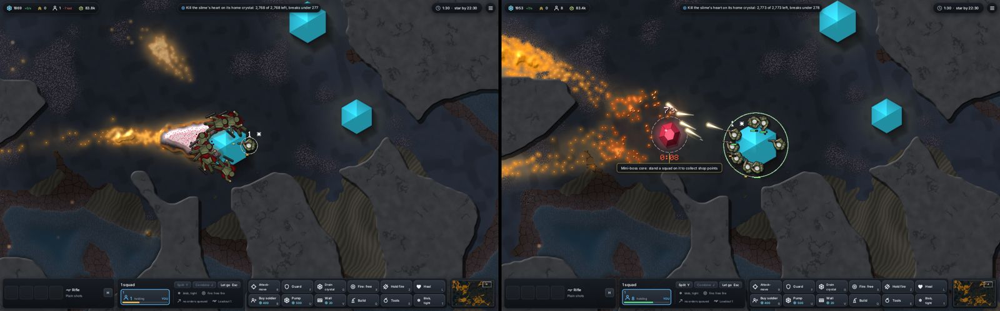

<title>Crystal Bait</title>
<meta name="claude:viewport-fit-sides" content="cover">
<link rel="stylesheet" href="https://fonts.googleapis.com/css2?family=Space+Grotesk:wght@500;700&family=Inter:wght@400;600&family=JetBrains+Mono:wght@400&display=swap">
<style>
/* Layout: one reading column; each picture full width with its counts beside it in a small table. */
:root {
  --bg: #f6f3ec; --fg: #23211c; --muted: #6b665a; --line: #ddd6c6; --slime: #b86a00; --panel: #fffdf8;
  --display: "Space Grotesk", "Segoe UI", system-ui, sans-serif;
  --body: "Inter", "Segoe UI", system-ui, sans-serif;
  --mono: "JetBrains Mono", ui-monospace, monospace;
}
@media (prefers-color-scheme: dark) { :root:not([data-theme="light"]) { --bg: #17150f; --fg: #ece6d8; --muted: #a59d8b; --line: #3a352a; --slime: #f0a326; --panel: #1f1c15; color-scheme: dark } }
:root[data-theme="dark"] { --bg: #17150f; --fg: #ece6d8; --muted: #a59d8b; --line: #3a352a; --slime: #f0a326; --panel: #1f1c15; color-scheme: dark }
body { background: var(--bg); color: var(--fg); font: 15px/1.55 var(--body); }
main { max-width: 1320px; margin: 0 auto; padding-block: 28px 60px; padding-left: max(16px, env(safe-area-inset-left, 0px)); padding-right: max(16px, env(safe-area-inset-right, 0px)); display: grid; gap: 34px; }
h1, h2 { font-family: var(--display); text-wrap: balance; margin: 0; }
h1 { font-size: 2rem; }
h2 { font-size: 1.25rem; }
p { margin: 0; max-width: 68ch; }
.lede { display: grid; gap: 10px; }
.eyebrow { font: 12px var(--mono); letter-spacing: .06em; text-transform: uppercase; color: var(--slime); }
section { display: grid; gap: 12px; }
figure { margin: 0; display: grid; gap: 8px; }
figure img, figure video { width: 100%; max-width: 100%; height: auto; border-radius: 6px; background: #000; }
.pair-labels { display: grid; grid-template-columns: 1fr 1fr; font: 12px var(--mono); color: var(--muted); }
figcaption { color: var(--muted); font-size: 13px; max-width: 90ch; }
.tablewrap { overflow-x: auto; }
table { border-collapse: collapse; font-variant-numeric: tabular-nums; font-size: 13px; }
th, td { text-align: right; padding: 4px 12px; border-bottom: 1px solid var(--line); white-space: nowrap; }
th:first-child, td:first-child, th:nth-child(2), td:nth-child(2) { text-align: left; }
th { font-weight: 600; color: var(--muted); }
tr.on td { color: var(--slime); }
.rec { background: var(--panel); border: 1px solid var(--line); border-radius: 8px; padding: 16px 18px; display: grid; gap: 8px; }
code { font: 13px var(--mono); }
ul { margin: 0; padding-left: 20px; max-width: 80ch; }
</style>

<main>
  <div class="lede">
    <div class="eyebrow">Lab prototype · planets 4 and 7 · not in the game</div>
    <h1>A charged crystal as bait for a mini-boss</h1>
    <p>A wanderer goes crystal by crystal toward your squad, and only to crystals still charged. With feeding on, its hungry walkers that reach a charged crystal leave the boss and eat. So a crystal in its way, left charged, thins it out before it reaches you. Every mini-boss here is forced to a wanderer, so both arms meet the same kind; the squad of 8 holds on the crystal by its landing.</p>
  </div>

  <section>
    <h2>Planet 7, seed 2, at 1:30</h2>
    <figure>
      
      <div class="pair-labels"><span>off: 1 soldier left, wiped at 1:44</span><span>bait: the boss broke at 1:23, 8 alive</span></div>
      <figcaption>The wanderer goes straight for the squad's crystal. Off, 592 walkers arrive and sit on it. Fed, it formed at 315 and was down to 89 on arrival; it broke at 1:23 and left its core (the red gem).</figcaption>
    </figure>
  </section>

  <section>
    <h2>Every run, 3:00</h2>
    <div class="tablewrap">
      <table>
        <thead><tr><th>Planet, seed</th><th>Off</th><th>Bait</th><th>Drain</th></tr></thead>
        <tbody>
          <tr><td>4, 1</td><td>8 alive (boss far off)</td><td>8 alive</td><td>19 alive</td></tr>
          <tr class="on"><td>4, 2</td><td>wiped 2:35</td><td>8 alive, boss broke 2:36</td><td>16 alive, boss broke 2:32</td></tr>
          <tr class="on"><td>4, 3</td><td>8 alive, boss swells to 5,312</td><td>8 alive, boss starved to broken 2:01, 207 away</td><td>19 alive, boss broke 2:58</td></tr>
          <tr><td>7, 1</td><td>8 alive</td><td>8 alive</td><td>13 alive (boss fizzled at birth)</td></tr>
          <tr class="on"><td>7, 2</td><td>wiped 1:44</td><td>8 alive, boss broke 1:23</td><td>13 alive (boss fizzled at birth)</td></tr>
          <tr><td>7, 3</td><td>8 alive (boss spent far off)</td><td>8 alive (the same)</td><td>dropped</td></tr>
        </tbody>
      </table>
    </div>
    <p>Wiped in 2 of 6 off runs, none of 6 bait runs (p 0.5, not significant). The boss broke in 3 of 6 bait runs, 0 of 6 off. Drain: the squad drains its own crystal (2,180 to 3,270 food, 8 to 11 more soldiers), with feeding still on elsewhere.</p>
  </section>

  <section class="rec">
    <div class="eyebrow">Recommendation</div>
    <p><b>Build feeding as the wanderer's trait.</b> Fed wanderers broke on charged crystals and no bait squad was wiped, from the slime's own food rule. The trade Direction framed is real only when the crystal the boss heads for is one you'd drain. On planet 4 it never was: the starving crystal was the next one on the boss's way, so draining your own paid and cost nothing. The real test, planet 7 seed 2 drained, never met a boss: once the squad spent its income the game went another way and the wanderer fizzled at birth. The trade is still untested; staging the boss would test it.</p>
    <p>Card: "Its wanderers are always hungry: leave a crystal in their way and they stop to eat."</p>
    <p>Report: <code>Reports/lab-crystal-bait-2026-11-24/README.md</code>. Code on the lab branch only, <code>14ba8f8f</code>, <code>8573ff93</code>.</p>
  </section>
</main>
